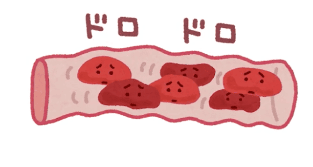
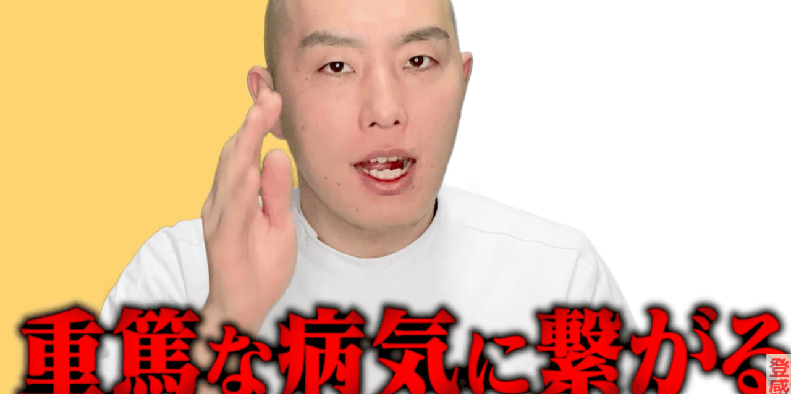
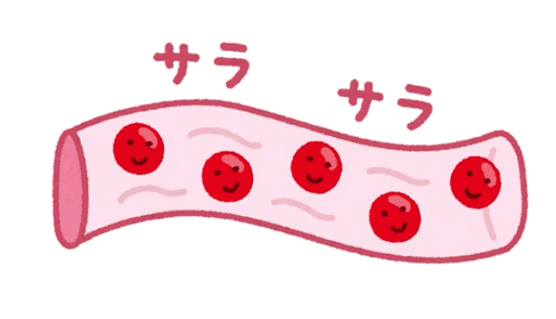
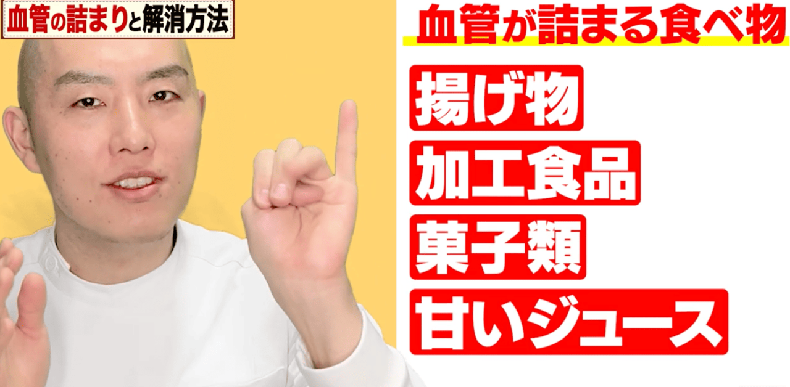
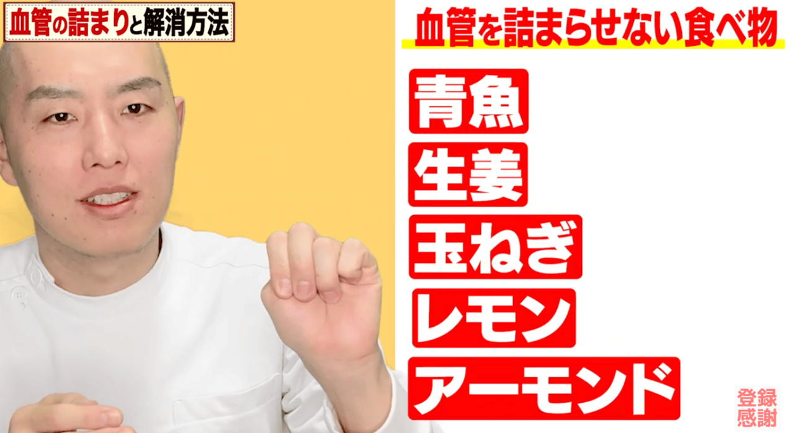
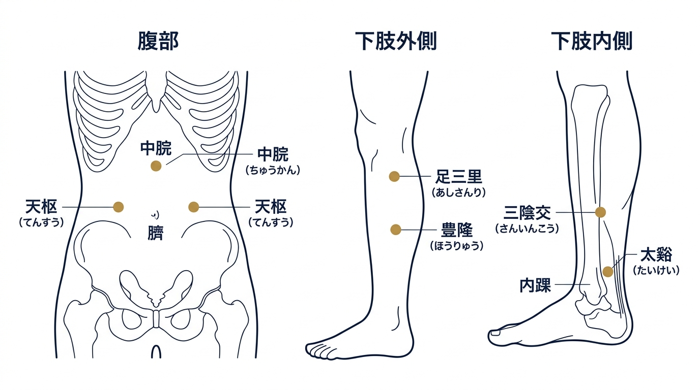

血管が硬く柔軟性を失う状態。医療機関での生活習慣病管理と並行し、合谷・内関・太衝のツボや自律神経ケアで巡りを支えます。
動脈の血管壁が年齢や生活習慣の影響で傷み、硬く柔軟性を失って内腔が狭くなる状態です。小型LDLコレステロールの蓄積、高血圧、高血糖、内臓脂肪による慢性炎症、喫煙、運動不足、ストレスなどが複合的に重なって進行します。初期は自覚症状が乏しく、進行すると狭心症や心筋梗塞、脳卒中、間欠性跛行など重篤な合併症を招きます。（公式解説）
このようなお悩みはありませんか？
当院の施術アプローチ

動脈硬化は、血管が硬くなり柔軟性がなくなっている状態のことです。血管の老化が動脈硬化なのです。
肌と同じように、血管も年齢を重ねるにつれて傷ついて弱り、しなやかさは低下していきます。
血管の老化が肌の老化と違うことは、命に関係することと見た目ではわからないことです。そのため、ほとんどの人は血管の老化に気がつかずそのまま放っておいてしまうのです。
放っておくと、血液の通り道が狭くなったり血栓ができてつまったりします。すると突然、心筋梗塞や脳卒中などの命に関わる大きな病気が起きることがあります。

動脈硬化は初期症状がほとんどありません。症状のないまま、体の中で静かに進んで行きます。動脈硬化が進むと、脳と心臓と足に症状が現れます。
脳では、めまいや頭痛、耳鳴りなどの症状が起こります。しゃべりにくくなったり、手足のしびれが現れたり、力が入らないと感じるようになります。
心臓で現れる症状では、階段を登り降りするとき動悸がするようになります。急いだり、重い荷物を持って歩いたりすると息が苦しくなることもあり、疲れやすいと感じるようになります。
足では、冷えや痛みなどの症状が現れます。歩いているとき太ももの裏側やふくらはぎに痛みを感じたり、足をひきずったりするようになります。
このような症状がある場合、気が付かないうちに動脈硬化がかなり進んでいることがほとんどです。すぐに病院に行くことをお勧めします。
症状がない場合は、人間ドックなどで脂質の数値から改めて振り返ると良いです。動脈硬化は、初期段階ではほとんど症状がなく進んでいき、おかしいということに気がついたときには臓器が大きなダメージを受けた後であることが多いです。定期的に調べるなど十分に注意しましょう。
〈動脈硬化の初期症状〉
・疲れやすい
・冷えを感じやすい
・動悸や息切れが起こりやすい
・頭がボーっとする
・手足のしびれ
・目のかすみ
〈動脈硬化が進行した場合の症状〉
・めまい・ふらつき
・物忘れが多くなる
・集中力が続かない
・手足のしびれや麻痺
・ろれつが回らない
・片側の手足が動かしにくくなる
・一時的に視野が狭くなる
・突然片側の手足や顔が麻痺する
・片目が一時的に見えなくなる
・一時的に言葉が出なくなる
・胸の締めつけ感・圧迫感（狭心症）
・胸の痛み（特に運動時やストレス時）
・左肩や腕に広がる痛み
・息切れや動悸
・安静時でも痛みが出る
・歩くとふくらはぎが痛む（間欠性跛行）
・足が冷たい、しびれる
・足の皮膚が青白くなる
・高血圧が悪化する
・むくみ（特に足や顔）
・尿の量が減る、または増える
・尿に泡が立つ（タンパク尿）
・疲れやすい、倦怠感

動脈硬化そのものを改善する方法は、いまだに確立されていません。
薬を使って血液の通りを改善したり、手術で動脈そのものを人工の物に換えたりなどという改善方法はありますが、このような改善方法は動脈硬化が大きな合併症を引き起こしたときに使われる方法です。
このような方法には、自分の体や生活の質に対してたくさんの制限や大きな苦痛を感じることが多いです。動脈硬化に確立された改善方法はありませんが、動脈硬化は急に起こるものではありません。
糖尿病や高脂血症、高血圧などの動脈硬化を引き起こす可能性のある病気を予防することで動脈硬化を予防することができます。
そのために、食生活を改善すること、適度な運動をすること、禁煙をすること、ストレスの対策をすることが非常に大切です。
一般的に、年齢を重ねることによって動脈硬化は進みます。できるだけ早い段階で、生活習慣などを意識して改善しておくことで、動脈硬化の予防につながります。
動脈硬化を予防するためには、適度な運動が大切です。1回30分程のウォーキングや水泳、エアロビクスなどの有酸素運動を習慣にすると良いでしょう。
適度な運動をすることで、太りにくい体質をつくることができます。中高年の場合は、激しい運動は危険なため無理のない範囲で運動を行うことが大切です。
・食生活の改善
① 悪玉コレステロール（LDL）を減らし、善玉コレステロール（HDL）を増やす
トランス脂肪酸、飽和脂肪酸、精製糖質、加工食品を避けましょう。オメガ3脂肪酸、食物繊維、ポリフェノール、大豆製品、ナッツ類を積極的に摂りましょう。
② 抗酸化食品を取り入れる
ビタミンC・Eが豊富な食品、リコピン、カロテノイドを摂取しましょう。
③ 塩分を控え、血圧を下げる
1日の塩分摂取目標は6g以下です。塩の代わりに 酢・レモン・香辛料を使ったり加工食品を控えることで減塩しましょう。
・運動習慣の改善
① 有酸素運動
おすすめの運動はウォーキング、ジョギング、水泳や自転車、ストレッチです。
② 筋トレ
おすすめの筋トレはスクワット、プランク、ダンベル運動です。
・禁煙・節酒
① 禁煙（血管の老化を防ぐ）
② お酒は適量にする
適量の赤ワイン、適量の日本酒、焼酎はOKです。
4. ストレス管理
① リラックスする習慣を持つ
瞑想や深呼吸、趣味の時間を作る、アロマテラピーなどがお勧めです。
② 睡眠の質を向上させる
1日7時間以上の睡眠が理想です。寝る1時間前にスマホ・PCを控えましょう。


〈血管が詰まる食べ物〉
血管が詰まる食べ物は、揚げ物、加工食品、菓子類、甘いジュースです。
揚げ物はコレステロールやコレステロールやトランス脂肪酸など脂質が多く含まれるため、美味しいですが食べ過ぎに注意です。
加工食品はベーコンやソーセージです。ベーコンやソーセージは美味しさを保つために色々な化学物質と多量の塩分が含まれているため食べ過ぎに注意です。
菓子類やジュースは多量の糖分や精製された小麦粉が使われているため、血液をドロドロにしやすいです。摂りすぎは良くありません。院長がスポーツをしていた時期、アクエリアスを多量に飲むことは禁止されていました。アクエリアスには糖分が入りすぎているため、体重管理にも良くなく、半分くらい水に薄めて飲んでいました。清涼飲料水にも多量の糖分が含まれるため摂り過ぎには注意が必要です。
〈血管を詰まらせない食べ物〉
血管を詰まらせない食べ物は、青魚、生姜、玉ねぎ、レモン、アーモンドです。
青魚はEPA、DHAといったオメガ３脂肪酸が含まれており血液をサラサラにしてくれます。
生姜にはジンゲロールといい血管を拡張させて血流を促す効果があります。生姜をとると血流が良くなり体がぽかぽかするように体を温める効果があるため、血流には非常に良い食べ物です。
玉ねぎやりんごにはケルセチンという強力な抗酸化作用を持つ成分が含まれています。
レモンや酢の物に含まれるクエン酸は血液をアルカリ性に傾けて血流の流れを良くしてくれます。
アーモンドやアボカドはビタミンEが多量に含まれているため血流の老化を防いで血流を活性化させてくれます。
院長のおすすめのサプリメントはEPA、DHAです。多くの方をみてきて、健康と体重差や姿勢、年齢差、男女差はあまり関係ないと感じています。太っていても元気な人は元気で、痩せている人、スマートな人や筋肉質な人でも調子が悪い人は調子が悪いです。
健康な人の共通点として、血流の良い人は元気です。調子の悪い人は基本的に血流が悪いです。血管を詰まらせないことが健康維持の第一条件なのです。その人たちがよく摂取しているのがEPA、DHAです。
オメガ３脂肪酸という脂肪酸の研究の歴史は６０年以上あります。アイヌ民族はオットセイなどを食べていますが、体が比較的ふくよかな人が多く長生きで健康な人が多かったのです。これはオットセイなどアイヌ民族の人が食べている動物は小魚を食べていたため、関節的にオメガ３脂肪酸を多くとっていたことが血管年齢に影響しているのではないかということが論文でまとめられています。
サプリメントの有効性が認められている栄養素は2つしかありません。DHAと葉酸です。色々なサプリメントがありますが、健康に作用する成分の中でDHAとEPAが最も優れているのです。
院長もオメガ３脂肪酸を3年間飲み続けています。魚を食べる機会は少ないと思います。そのため、サプリメントで摂取できると良いでしょう。
健康な体を維持するためにはバランスの良い食事が1番です。忙しくて食事を規則正しくとれない人もサプリメントで摂ることで効率よく摂取できるためオススメです。砂糖と脂質を摂り過ぎないように注意し、解消するために抗酸化作用を持つ食べ物をいっぱい摂りましょう。それが難しい場合はサプリメントで摂取してほしいです。
血管が血管が詰まると重篤な病気につながります。当院で多くの方をみてきて元気な人ほど血流が良いということがわかりました。ぜひ血管年齢と血流を維持していきましょう。
実際の施術ではお一人おひとりの体質・症状に合わせて選穴しますが、内分泌・代謝領域の補完ケア（2型糖尿病・DPN・甲状腺QOL・肥満/メタボ）の臨床でよく用いられる代表的なツボの目安です。

| ツボ名 | 位置の目安 | 主な狙い | セルフケアの注意点 |
|---|---|---|---|
| 中脘（ちゅうかん） | みぞおちとおへそのちょうど中間 | 消化・代謝バランス調整、食べ過ぎ・胃もたれ対策 | 食直後の強圧は避け、吐く息に合わせ優しく |
| 天枢（てんすう） | おへそから左右それぞれ指3本分外側 | 腸蠕動促進・内臓脂肪/メタボケアの頻用穴 | 腹部膨満や術創直後は避ける |
| 足三里（あしさんり） | 膝外側下のくぼみから指4本分下、すね外側 | 糖・脂質代謝サポート、倦怠感の緩和 | 糖尿病で知覚鈍麻がある場合はお灸の熱傷に厳重注意 |
| 三陰交（さんいんこう） | 内くるぶし頂点から指4本分上、すね骨の際 | 内分泌・自律神経バランス、冷え・DPNケア | 糖尿病性神経障害時はお灸を避け優しい圧のみ |
| 豊隆（ほうりゅう） | 外くるぶしと膝の中間、すね外側の筋の盛り上がり | 脂質代謝・むくみ・単純性肥満ケアの定番穴 | 抗血栓薬服用中は強圧による内出血に注意 |
| 太谿（たいけい） | 内くるぶしとアキレス腱の間のくぼみ | 甲状腺機能低下に伴う冷え・疲労感、足部血流 | 足部に傷・水虫・知覚鈍麻がある場合は施灸厳禁 |
国際的な医学データベース（PubMed・Cochrane等）で報告されている内分泌・代謝領域の補完ケア（2型糖尿病・DPN・甲状腺QOL・肥満/メタボ）領域の代表的な査読済み鍼灸研究をまとめています（標準治療との併用や研究上の限界を含めて正確に掲載）。
| 年・研究デザイン | 対象・規模 | 主な結果 | 限界・出典 |
|---|---|---|---|
| 2026年 メタ解析 | 2型糖尿病 20 RCTs（n=1,479） | 空腹時血糖（SMD -0.52, p=0.009）、HbA1c（SMD -0.76, p=0.002）、HOMA-IR（p<0.0001）を有意低減。 | 将来研究のばらつき懸念。食事・運動・薬物療法の継続必須。 Postgrad Med J (PMID: 41052150) |
| 2025年 メタ解析 | 糖尿病性末梢神経障害（DPN）14 RCTs（n=1,169） | 偽鍼比でVAS疼痛-1.44cm、神経症状スコアTCSSも有意改善（WMD -1.22）。 | GRADE確実性は低い。足部の熱傷・感染予防に細心の注意。 Curr Pain Headache Rep (PMID: 40220243) |
| 2024年 メタ解析 | 橋本病（慢性甲状腺炎）14 RCTs（n=1,020） | レボチロキシン単独比でTPOAb・TGAb低下およびTSH・FT3・FT4の調整を示唆（p<0.00001）。 | 中国国内RCT中心・盲検化不足。甲状腺薬の自己中断は厳禁。 Medicine (PMID: 38428856) |
| 2024年 メタ解析 | 単純性肥満 25 RCTs（n=2,018・生活習慣併用） | 生活習慣単独比で体重-4.73・BMI -2.11・腹囲-4.96（p<0.00001）、中性脂肪・LDLも有意改善。 | 介入期間・方法の異質性高、長期リバウンド防止は要検証。 Diabetes Metab Syndr Obes (PMID: 39582784) |
参考文献・出典
脈が速い・遅い・不規則になる状態。循環器専門医での精査・治療を最優先とし、安定期には内関・神門など7つのツボと自律神経ケアで支えます。
植物ステロールが体内に蓄積し黄色腫や早発性動脈硬化を招く希少遺伝疾患。専門医の管理を軸に、安定期の体調・自律神経ケアを補完します。
血中LDLコレステロールや中性脂肪の異常。食事・運動療法や内科管理と並行し、体性内臓反射と太衝・蠡溝・期門のツボで肝機能を支えます。
皮膚の下に余分な水分がたまる状態。腎臓・心臓・肝臓等の基礎疾患確認を優先し、血流低下や自律神経由来のむくみを穏やかに整えます。
脳下垂体の良性腫瘍により成長ホルモンが過剰分泌される疾患。専門医の手術・薬物療法と合併症管理を最優先し、安定期の体調ケアを補完します。
下垂体前葉ホルモンの分泌低下で全身の代謝や血圧・性機能に影響する疾患。専門医のホルモン補充を最優先し、安定期の体調管理を補完します。
おひとりで悩まず、まずはご相談ください
銀座本院・川口・大宮・横浜・博多・田無の各院でご予約を承っております。